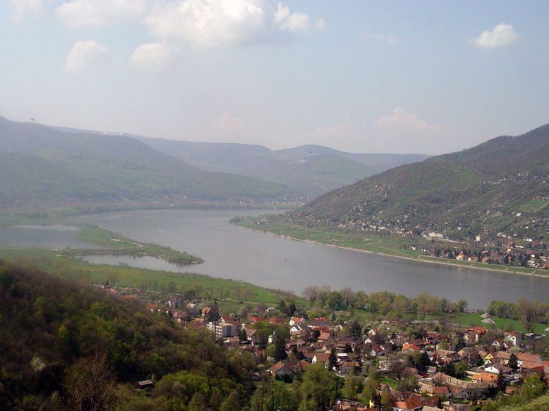

Magyarország egyik legkisebb, de egyik legrégibb városa. Népszerű kirándulóhely, régészeti jelentősége kiemelkedő.
A visegrádi várat 1009-ben említi először írott forrás. A vár és a körülötte kialakult település az Anjou királyok, Luxemburgi Zsigmond majd I. Mátyás uralkodása idején élte fénykorát. 1323 és 1408 között e város volt a magyar királyok hivatalos székhelye. Mátyás uralkodása idején budai, illetve visegrádi udvara az európai reneszánsz egyik központja volt.
1991-ben Magyarország, Csehszlovákia és Lengyelország vezető politikusai itteni találkozásuk alkalmával írták alá a Visegrádi Együttműködés alapító nyilatkozatát.
A település állandó lakosainak száma régóta stagnál: 1910-ben 1506, 1990-ben 1781, míg 2001-ben 1657 volt. Városi rangot 2000-ben kapott.
